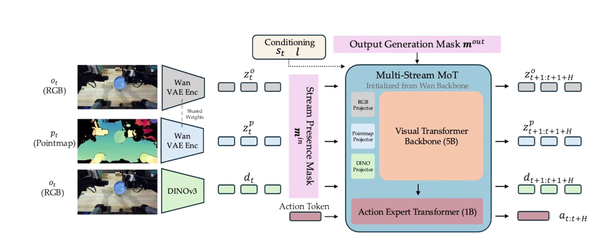

Research · Paper
FLEXI-π: Multi-Stream World-Action Models with Compute–Precision Flexibility
Affiliation withheld for double-blind review
World-action models (WAMs) that jointly predict future observations and actions have recently outperformed parameter-equivalent vision-language-action models on manipulation, but three limitations hamper their deployment: they predict in pixel space, lack explicit 3D grounding, and bake their inference cost in at training time.
We introduce FLEXI-π, a single policy that resolves all three through one design principle: every visual signal a manipulation policy needs—appearance, geometry, and semantics—can be embedded into a shared, pre-trained latent space. A single frozen VAE from a pre-trained video generation model encodes both RGB images and 3D pointmaps, a frozen DINOv3 encoder supplies object-level semantic tokens, and a Mixture-of-Transformers backbone initialized from the same video model jointly denoises future latent streams alongside actions.
Because every modality lives in the same latent space, applying independent per-stream dropout on inputs and joint outputs during training yields a single checkpoint that supports any combination of input and output streams at inference, tracing out a speed–performance Pareto frontier without retraining.
After pre-training on AGIBOT World and fine-tuning per benchmark, FLEXI-π matches the strongest VLA baseline in fast action-only mode and exceeds the strongest WAM baseline at full joint generation on RoboTwin and LIBERO, and outperforms π0.5 on held-out generalization tasks on a real bimanual YAM robot.
The idea
Three limitations of current world-action models — and what FLEXI-π fixes.
Limitation
Pixel-space prediction
WAMs spend capacity rendering pixel detail that doesn't help control.
→ Resolved by
Efficient latent prediction. FLEXI-π reconstructs future latent observations, not pixels.
Limitation
No explicit 3D
Manipulation is a 3D problem; image-only WAMs carry no explicit geometry.
→ Resolved by
Geometric grounding. Co-denoising a pointmap stream grounds scale, depth, and contact.
Limitation
Cost fixed at train time
Need faster inference? You'd have to retrain a separate, weaker model.
→ Resolved by
Flexible inference via stream dropout. One checkpoint generates any subset of streams.
How it works
One latent space, three visual streams, generated jointly with actions.
Three optional visual streams plus an always-on action stream — encoded into one shared latent space, fused by a single backbone, denoised together.
01 Encode
Into one latent space
RGB and pointmaps share the same frozen
Wan-2.2 VAE; semantics come from a frozen
DINOv3 encoder.
02 Fuse
Mixture-of-Transformers
A 5B visual backbone (init. Wan-2.2) processes every
stream; a smaller action expert cross-attends to it.
03 Generate
Any subset of futures
Future streams are co-denoised, so you can drop any visual output at inference to trade latency for accuracy.

The surprising bit
3D through an image VAE
Feeding a pointmap through a VAE trained only on images still reconstructs accurately — geometry shares the video model's latent space for free.
Why it's flexible
Two masks, one checkpoint
Independent input- and output-stream dropout teaches a single model to tolerate missing inputs and co-generate any subset of futures.
For practitioners
No 3D needed downstream
After pre-training, FLEXI-π needs no ground-truth 3D to fine-tune — it predicts pointmaps from RGB/DINO alone.
One trained model serves many deploy regimes.
Per-sample dropout of stream presence and joint flags at training lets the same checkpoint take any input combination and produce any output combination at deploy — no retraining.
Input streams
Full input
Drop pointmap
DINO only
Single checkpoint
Trained once with per-sample stream dropout. Picks any input / output regime at inference.
Generated outputs
Full joint
DINO + 3D + action
Action only · fastest
The headline contribution
One checkpoint. Slide along the speed–performance frontier.
Because every modality lives in the same latent space, you choose which future streams to generate at inference — without retraining. Toggle the outputs below and watch latency and success rate move.
Inference configuration
Generated output streams
Action is always generated. Add visual futures to trade speed for accuracy.
Illustrative frontier. Action-only inference is fastest; enabling visual outputs raises success rate at the cost of latency. Exact per-configuration numbers appear in the paper.
Real-world manipulation
Main results
Four tasks, each compared against the π0.5 baseline and our FLEXI-π model in two inference modes — full joint generation and fast action-only (FP-AO) — under in-distribution conditions.
Limitations
Where FLEXI-π still fails
For transparency, a few representative failure modes of our own model.
Generalization
Unseen conditions
Each task is stress-tested under its own set of held-out conditions. Select a task to browse its generalization cases.
Results
Real-world bimanual manipulation on a YAM robot.
Four dexterous tasks, partial-credit scoring over 10 episodes each. A single FLEXI-π checkpoint matches the strongest VLA in-distribution while also exposing a ~3× faster action-only mode (FP-AO).
Reading the chart: bars are partial-credit success rate (%); whiskers span the min–max across each task's sub-rules. In-distribution, π0.5 leads narrowly while FLEXI-π stays close at a fraction of the inference cost. FLEXI-π's edge appears on held-out generalization — see the video comparisons above. Numbers are placeholders.
| Method | Task A | Task B | Task C | Avg. |
|---|---|---|---|---|
| Baseline | 0.42 | 0.31 | 0.55 | 0.43 |
| Prior SOTA | 0.61 | 0.48 | 0.70 | 0.60 |
| Ours | 0.84 | 0.72 | 0.89 | 0.82 |
What FLEXI-π unlocks
We show FLEXI-π's capability across six settings—five testing generalization, and one demonstrating real-time deployment:
-
1
Setting One
Short description of the first setting. Replace with the actual benchmark, dataset, or scenario being evaluated and what makes it interesting.
-
2
Setting Two
Short description of the second setting. Mention the embodiment, the task split, and the evaluation protocol.
-
3
Setting Three
Short description of the third setting—what is being fine-tuned, the data scale, and the key takeaway.
-
4
Setting Four
Short description of the fourth setting. Use this slot for an adaptation or transfer experiment.
-
5
Setting Five
Short description of the fifth setting—e.g. zero-shot prompting or in-the-wild evaluation.
-
6
Real-Time Inference
Headline deployment number, e.g. TODO× speedup enabling closed-loop control at TODO Hz.
Conclusions
FLEXI-π demonstrates that a single multi-stream policy can span the entire speed–performance Pareto frontier between action-only VLAs and full-joint WAMs — no retraining, no model surgery, just a flag flip at inference. Embedding every modality into a shared, pre-trained latent space is what makes this possible.
We hope this challenges the prevailing “pick one, bake it in” design assumption in robot policy learning. TODO: closing sentence or call to action.
Limitations
TODO — describe the main failure modes here: long-horizon tasks past the training horizon, high-DOF dexterity, novel embodiments outside the pre-training mix, and the compute cost of the slowest (full-joint) inference regime.
The shared-latent assumption also breaks for modalities that can't be cleanly reconstructed by the video VAE (e.g. force / tactile streams) — extending FLEXI-π to those is left as future work.
Hardware
Real-world experiments use the platforms below. Simulated results are on RoboTwin and LIBERO.
-
Bimanual platform TODO
TODO arms with TODO-DOF grippers, TODO× wrist cameras, one third-person camera at TODO Hz.
-
Simulated benchmark — RoboTwin
Bimanual manipulation suite, 50 tasks, evaluated on the standard test split.
-
Simulated benchmark — LIBERO
Object / spatial / goal / long-horizon splits, single-arm setting.
Citation
Citation withheld for double-blind review.